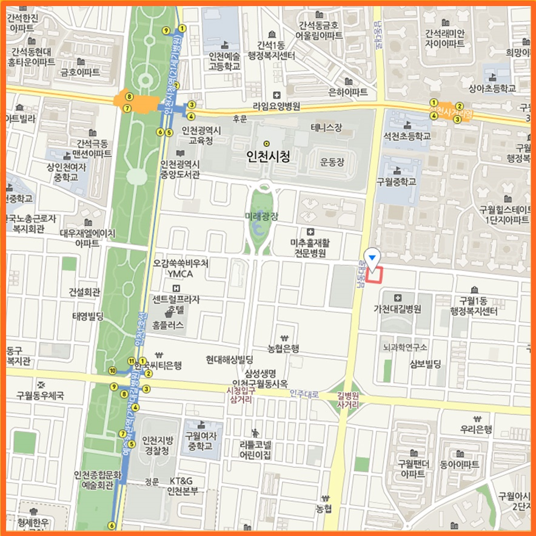

검증받은 마음동네 심리프로그램

마음동네 심리전문가, 전문상담사 및 치료사들은 전문적인 심리학적 지식과 다양한 심리치료의 이론적 배경을 근거로 한 적절한 치료기법을 통해 한 분 한 분의 마음의 소리에 진심으로 귀를 기울이고 따뜻함으로 함께 동행합니다.
- 균형심리이론개발 (2009)
- 국회교육상임위원장상 대상 수상 (2019.12.3)
- IBPI한국대인관계균형심리검사 출시 (2020.8.14)
- 마음동네 감정카드 출시 (2020.10.28)
- 특허 "감정상태 분류를 통한 솔루션 제공 방법"
(Method for providing solution using mind and feeling classification) 등록번호: 제10-2322752호 (2021.11.1) - 인천시장상 수상 (2022.10.6)
- 특허 "균형심리이론 기반 마음작업 서비스 제공 시스템"
(Balanced psychological theory based mind work service provision system) 등록번호: 제10-2500073호(2023.2.10) - IBPI한국대인관계균형심리검사 Software 개발완료 (2024.5.2)
- 애착케어종합심리검사 Software 개발완료 (2024.5.2)
상담절차
상담 예약
홈페이지 또는 네이버 예약 문의
예약날짜 확정
초기 면담
예약 당일 20분 일찍 도착하여 접수면접자료 작성 후 상담사와 상담
필요시 심리검사, 뇌파검사 및 성격 및 대인관계검사 실시
치료계획
증상 및 해결해야 할 문제의 원인 해석 및 해결책 제시
치료 및 검사
심리치료 진행
내담자 성장케어 프로그램
마음동네는 뇌파훈련, IM훈련, 힙브레인훈련 및 자체 개발한 감정카드를 활용하여 내담자의 성장 과정을 모니터링하여 시의적절한 상담서비스를 제공합니다.
아로마 테라피
약물의 부작용으로 고생하거나 약물 복용을 선호하지 않는 내담자들을 위해 아로마 테라피를 통한 자연 치유 환경을 제공합니다.
협력기관
마음동네와 함께한 협력기관
서비스
마음동네는 애착, 기질, 성격 및 대인 관계 관련 심리 평가 및 상담 서비스를 제공합니다.
아동청소년성인 종합심리평가
애착심리상담사 트레이너 과정은 영유아애착케어종합심리검사를 진행하는데 필요한 심리학 이론, 검사 방법론, 상담 기술, 마이크로아날리시스 동영상 촬영 훈련 및 보고서 분석 방법론 등을 훈련하는 과정입니다.
행복한 교육학교
인공지능이 인간의 역할을 대신하고 전통적인 학교 시스템이 효용가치를 잃어버리고 있는 이 시대에 어떤 교육을 해야 하는지 궁금하시죠. 모아기질애착연구소의 행복한 교육학교에서 궁금증을 해결하시고 자녀 교육에 꼭 필요한 원리와 방법을 얻오보세요. 필독서: 내 아이의 균형능력을 키워주는 균형 교육
마음동네심리상담센터
출산 전 성인상담, 양육자상담, 육아상담, 유아 및 아동상담, 청소년 상담 및 성인 상담을 진행합니다.
- 출산 전 성인상담: 성인 애착 및 기질의 탐색과 개입, 행복한 커플, 부부관계, 행복한 부모 준비
- 양육자상담: 양육자 애착의 진단 및 개입 상담: 어머니와 아기의 면대면 상호작용 분석(Microanalysis) 및 애착형성 진단 및 개입
- 육아상담: 아기의 지속적인 건강한 발달을 위한 육아 상담
- 유아 및 아동상담: 자율성, 주도성, 연대감, 창의성, 긍정심리의 발달 촉진 소아 정신병리 상담
- 청소년 및 성인상담: 불안, 우울, 외상, 스트레스, 성격, 기타 정신병리 관련 상담
Team
마음동네심리상담센터의 전문가 및 연구진
김명숙
센터장임상심리전문가, 임상및상담심리학박사수료, 한국여성심리학회 논문심사위원, 한국임상심리학회 수련감독자, 2022년 인천정신건강의날 인천시장상 수상
남상철
원장Western Covenant University 상담대학원 교수, 한국심리학회 여성심리사 1급 제9호, 한국여성심리학회 교수회원, 2019대한민국아름다운경영인 국회교육상임위원장상 대상 수상
천세경
전문상담사한세대 상담대학원 가족상담학 석사, 한국상담학회 전문상담사 2급, 여성가족부 청소년상담사 3급, 분노조절상담사 1급, 도박중독문제 전문상담사,
상담후기
연락처
마음동네심리상담센터는 통합적 치료를 위한 최적의 환경을 제공합니다.
상담 예약을 원하시거나 궁금한 점이 있으시면 메시지를 남겨주십시요.
주소:
인천 남동구 구월남로 172 502호(길병원건강검진센터 옆)
이메일:
mudn2@naver.com
전화:
032-431-0088
